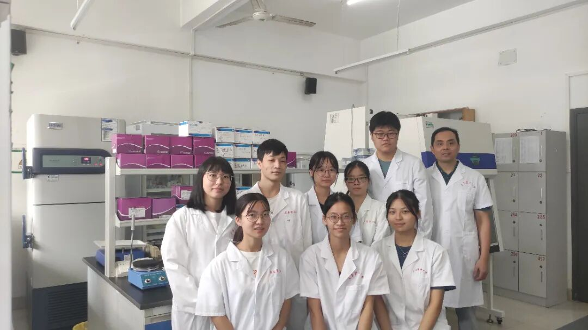
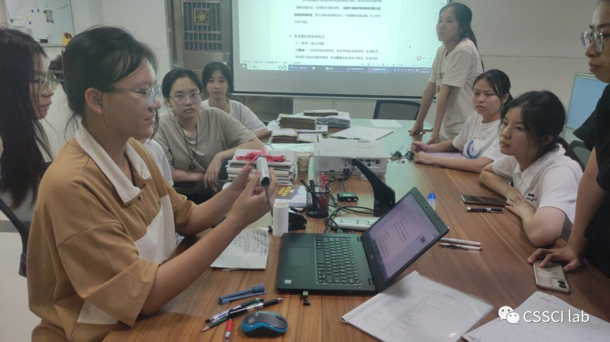
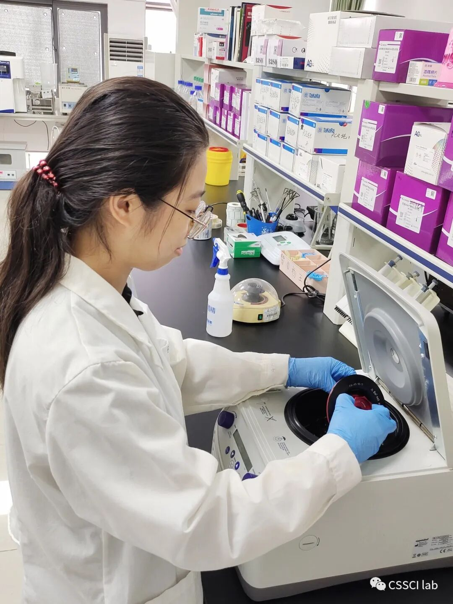
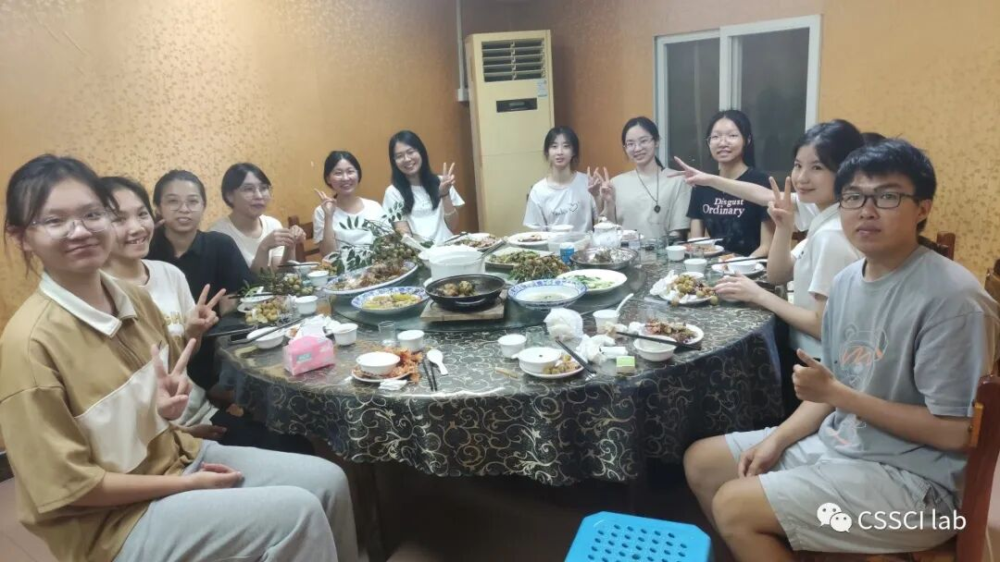

匹配问题
根据个人兴趣与能力进入实验研究、分子模拟或生物信息方向。
PEOPLE / COMMUNITY
导师、学生和协作者围绕真实问题建立共同语言，并对证据负责。

ACADEMIC LEAD
医学博士 · 副教授 · 病原生物学与免疫学研究所副所长
HOW WE WORK
根据个人兴趣与能力进入实验研究、分子模拟或生物信息方向。
成员参与提出问题、设计方案、分析证据和表达结果。
通过组会、文献精读与同行讨论持续修正假设。
LAB LIFE



ARCHIVE
历史年级、招募方式与成果状态仅代表文章发布时的信息。